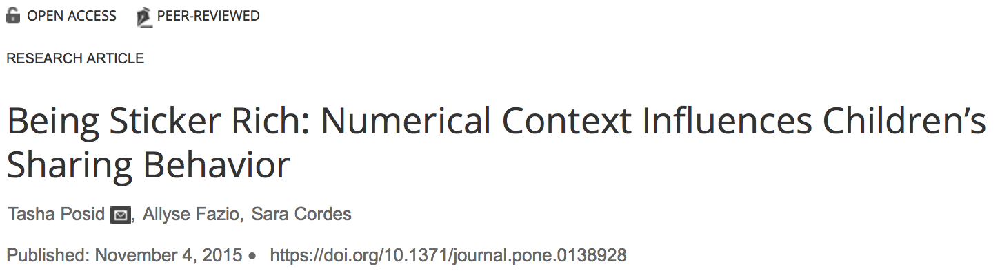
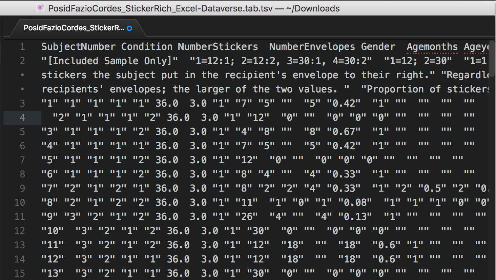
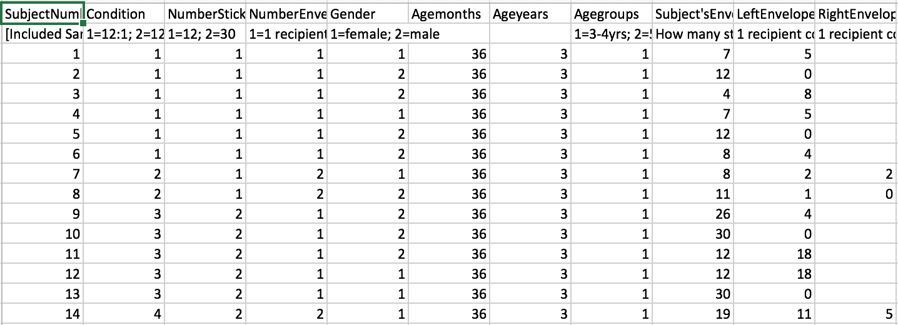

Read Data with Multiple Header Rows into R
By Alison Hill in readr readxl data import
July 8, 2018
readxl package, thank you to
Jenny Bryan for the
invitation!
A problem I run up against a lot when working with other people’s data is having multiple header rows in the source data file. I like to use readr functions to read in rectangular data like .csv and .tsv files, but if you skip rows at import using the skip argument, you lose the header row as well, which usually has column names. The problem I often have is that the header row has column names that I want to keep, but I’d like to skip the second row (or more), which has some junk in it. Usually this row is some kind of data dictionary inserted between the row of column names and the actual data.
In this post, I’ll walk through a solution to this problem, using the readr package. You can also watch along in the video.
<div style="position: relative; padding-bottom: 56.25%; height: 0; overflow: hidden;">
<iframe allow="accelerometer; autoplay; clipboard-write; encrypted-media; gyroscope; picture-in-picture; web-share" allowfullscreen="allowfullscreen" loading="eager" referrerpolicy="strict-origin-when-cross-origin" src="https://www.youtube-nocookie.com/embed/Mayf_XhsQDE?autoplay=0&controls=1&end=0&loop=0&mute=0&start=0" style="position: absolute; top: 0; left: 0; width: 100%; height: 100%; border:0;" title="YouTube video"
></iframe>
</div>
Warning!: I made a mistake when I said readr uses the first 100 rows of your data to predict column types- it uses the first 1000 rows.
Being sticker rich
This dataset is from an article published in PLOS ONE called “Being Sticker Rich: Numerical Context Influences Children’s Sharing Behavior”. In this study, children (ages 3–11) received a small (12, “sticker poor”) or large (30, “sticker rich”) number of stickers, and were then given the opportunity to share their windfall with either one or multiple anonymous recipients. This type of experimental design is a version of the Dictator Game.

The main research questions the authors explored were: do the number of available resources and/or the number of potential recipients alter the likelihood of a child donating and/or the amount they donate? But, in order to answer this question, we have to be able to read in the data! Luckily, these lovely developmental psychologists opted to share their data on the Harvard Dataverse as a tab-delimited file.
If you download the file, you can open it up in a plain text editor. 
You can also open it with Microsoft Excel. 
Read in the file
Let’s start by creating a variable called link to store the link to the data file.
# create variable to store url
link <- "https://dataverse.harvard.edu/api/access/datafile/2712105"
The file has a .tab extension, so we know it is tab-delimited. This means that the right readr function for reading this file is read_tsv. Since we stored our link already as a character string, that is the only argument to the read_tsv function.
#install.packages("readr")
library(readr) # load the readr package
stickers <- read_tsv(link)
# spec()
Now, we know the second row of data is wonky, but how can we see that in R? There are a number of ways we can go spelunking around into our data file. The easiest to print it. Since we used readr, we have a tibble, which nicely prints to screen.
stickers
# # A tibble: 402 × 18
# SubjectNumber Condition NumberStickers NumberEnvelopes Gender Agemonths
# <chr> <chr> <chr> <chr> <chr> <dbl>
# 1 [Included Sample O… 1=12:1; … 1=12; 2=30 1=1 recipient;… 1=fem… NA
# 2 1 1 1 1 1 36
# 3 2 1 1 1 2 36
# 4 3 1 1 1 2 36
# 5 4 1 1 1 1 36
# 6 5 1 1 1 2 36
# 7 6 1 1 1 2 36
# 8 7 2 1 2 1 36
# 9 8 2 1 2 2 36
# 10 9 3 2 1 2 36
# # ℹ 392 more rows
# # ℹ 12 more variables: Ageyears <dbl>, Agegroups <chr>,
# # `Subject'sEnvelope` <chr>, LeftEnvelope <chr>, RightEnvelope <chr>,
# # `absolutenumberofstickersgiven(Conditions1or3:Outof12;Conditions2or4:Outof30)` <chr>,
# # `PercentGiven(Outof100percent)` <chr>, Giveornot <chr>,
# # LargerEnvelopeabs <chr>, LargeEnvelopepercent <chr>,
# # SmallerEnvelopeabs <chr>, SmallEnvelopepercent <chr>
Unfortunately, dplyr::glimpse can’t help us much, because we have one variable name that is ridiculously long (absolutenumberofstickersgiven(Conditions1or3:Outof12;Conditions2or4:Outof30)). We’ll fix that with dplyr::rename.
library(dplyr)
glimpse(stickers)
# Rows: 402
# Columns: 18
# $ SubjectNumber <chr> …
# $ Condition <chr> …
# $ NumberStickers <chr> …
# $ NumberEnvelopes <chr> …
# $ Gender <chr> …
# $ Agemonths <dbl> …
# $ Ageyears <dbl> …
# $ Agegroups <chr> …
# $ `Subject'sEnvelope` <chr> …
# $ LeftEnvelope <chr> …
# $ RightEnvelope <chr> …
# $ `absolutenumberofstickersgiven(Conditions1or3:Outof12;Conditions2or4:Outof30)` <chr> …
# $ `PercentGiven(Outof100percent)` <chr> …
# $ Giveornot <chr> …
# $ LargerEnvelopeabs <chr> …
# $ LargeEnvelopepercent <chr> …
# $ SmallerEnvelopeabs <chr> …
# $ SmallEnvelopepercent <chr> …
More options:
head(stickers)
# # A tibble: 6 × 18
# SubjectNumber Condition NumberStickers NumberEnvelopes Gender Agemonths
# <chr> <chr> <chr> <chr> <chr> <dbl>
# 1 [Included Sample On… 1=12:1; … 1=12; 2=30 1=1 recipient;… 1=fem… NA
# 2 1 1 1 1 1 36
# 3 2 1 1 1 2 36
# 4 3 1 1 1 2 36
# 5 4 1 1 1 1 36
# 6 5 1 1 1 2 36
# # ℹ 12 more variables: Ageyears <dbl>, Agegroups <chr>,
# # `Subject'sEnvelope` <chr>, LeftEnvelope <chr>, RightEnvelope <chr>,
# # `absolutenumberofstickersgiven(Conditions1or3:Outof12;Conditions2or4:Outof30)` <chr>,
# # `PercentGiven(Outof100percent)` <chr>, Giveornot <chr>,
# # LargerEnvelopeabs <chr>, LargeEnvelopepercent <chr>,
# # SmallerEnvelopeabs <chr>, SmallEnvelopepercent <chr>
tail(stickers)
# # A tibble: 6 × 18
# SubjectNumber Condition NumberStickers NumberEnvelopes Gender Agemonths
# <chr> <chr> <chr> <chr> <chr> <dbl>
# 1 396 1 1 1 2 136
# 2 397 4 2 2 1 136
# 3 398 1 1 1 1 137
# 4 399 1 1 1 2 137
# 5 400 4 2 2 2 139
# 6 401 3 2 1 1 143
# # ℹ 12 more variables: Ageyears <dbl>, Agegroups <chr>,
# # `Subject'sEnvelope` <chr>, LeftEnvelope <chr>, RightEnvelope <chr>,
# # `absolutenumberofstickersgiven(Conditions1or3:Outof12;Conditions2or4:Outof30)` <chr>,
# # `PercentGiven(Outof100percent)` <chr>, Giveornot <chr>,
# # LargerEnvelopeabs <chr>, LargeEnvelopepercent <chr>,
# # SmallerEnvelopeabs <chr>, SmallEnvelopepercent <chr>
names(stickers)
# [1] "SubjectNumber"
# [2] "Condition"
# [3] "NumberStickers"
# [4] "NumberEnvelopes"
# [5] "Gender"
# [6] "Agemonths"
# [7] "Ageyears"
# [8] "Agegroups"
# [9] "Subject'sEnvelope"
# [10] "LeftEnvelope"
# [11] "RightEnvelope"
# [12] "absolutenumberofstickersgiven(Conditions1or3:Outof12;Conditions2or4:Outof30)"
# [13] "PercentGiven(Outof100percent)"
# [14] "Giveornot"
# [15] "LargerEnvelopeabs"
# [16] "LargeEnvelopepercent"
# [17] "SmallerEnvelopeabs"
# [18] "SmallEnvelopepercent"
# View()
Now we are ready to diagnose the problem!
Problem: the first row is not really data. It is metadata about the variables, and it is screwing up readr’s ability to predict our column types.
Solution: we’ll use readr and the read_tsv() function to read in the data twice. In Step 1, we’ll create a character vector of the column names only. In Step 2, we’ll read in the actual data and skip the multiple header rows at the top. When we do this, we lose the column names, so we use the character vector of column names we created in Step 1 instead.
Read in the file (again)
Step 1
Goal: we want to read in the first row only and save it as a character vector called sticker_names. This row contains the correct column names that we’ll need in Step 2.
sticker_names <- link %>%
read_tsv(n_max = 0) %>% # default: col_names = TRUE
rename(stickersgiven = 'absolutenumberofstickersgiven(Conditions1or3:Outof12;Conditions2or4:Outof30)') %>%
names()
sticker_names
# [1] "SubjectNumber" "Condition"
# [3] "NumberStickers" "NumberEnvelopes"
# [5] "Gender" "Agemonths"
# [7] "Ageyears" "Agegroups"
# [9] "Subject'sEnvelope" "LeftEnvelope"
# [11] "RightEnvelope" "stickersgiven"
# [13] "PercentGiven(Outof100percent)" "Giveornot"
# [15] "LargerEnvelopeabs" "LargeEnvelopepercent"
# [17] "SmallerEnvelopeabs" "SmallEnvelopepercent"
glimpse(sticker_names)
# chr [1:18] "SubjectNumber" "Condition" "NumberStickers" "NumberEnvelopes" ...
Step 2
Goal: we want to read in all the rows except for the first two rows, which contained the variable names and variable descriptions. We want to save this as stickers, and set the column names to the sticker_names object we created in Step 1.
stickers <- link %>%
read_tsv(skip = 2, col_names = sticker_names)
glimpse(stickers)
# Rows: 401
# Columns: 18
# $ SubjectNumber <dbl> 1, 2, 3, 4, 5, 6, 7, 8, 9, 10, 11, 12,…
# $ Condition <dbl> 1, 1, 1, 1, 1, 1, 2, 2, 3, 3, 3, 3, 3,…
# $ NumberStickers <dbl> 1, 1, 1, 1, 1, 1, 1, 1, 2, 2, 2, 2, 2,…
# $ NumberEnvelopes <dbl> 1, 1, 1, 1, 1, 1, 2, 2, 1, 1, 1, 1, 1,…
# $ Gender <dbl> 1, 2, 2, 1, 2, 2, 1, 2, 2, 2, 2, 1, 1,…
# $ Agemonths <dbl> 36, 36, 36, 36, 36, 36, 36, 36, 36, 36…
# $ Ageyears <dbl> 3, 3, 3, 3, 3, 3, 3, 3, 3, 3, 3, 3, 3,…
# $ Agegroups <dbl> 1, 1, 1, 1, 1, 1, 1, 1, 1, 1, 1, 1, 1,…
# $ `Subject'sEnvelope` <dbl> 7, 12, 4, 7, 12, 8, 8, 11, 26, 30, 12,…
# $ LeftEnvelope <dbl> 5, 0, 8, 5, 0, 4, 2, 1, 4, 0, 18, 18, …
# $ RightEnvelope <dbl> NA, NA, NA, NA, NA, NA, 2, 0, NA, NA, …
# $ stickersgiven <dbl> 5, 0, 8, 5, 0, 4, 4, 1, 4, 0, 18, 18, …
# $ `PercentGiven(Outof100percent)` <dbl> 0.42, 0.00, 0.67, 0.42, 0.00, 0.33, 0.…
# $ Giveornot <dbl> 1, 0, 1, 1, 0, 1, 1, 1, 1, 0, 1, 1, 0,…
# $ LargerEnvelopeabs <dbl> NA, NA, NA, NA, NA, NA, 2, 1, NA, NA, …
# $ LargeEnvelopepercent <dbl> NA, NA, NA, NA, NA, NA, 0.5000000, 1.0…
# $ SmallerEnvelopeabs <dbl> NA, NA, NA, NA, NA, NA, 2, 0, NA, NA, …
# $ SmallEnvelopepercent <dbl> NA, NA, NA, NA, NA, NA, 0.5000000, 0.0…
Fin!
All together now: the final solution!
# load packages
library(readr)
library(dplyr)
# create variable to store url
link <- "https://dataverse.harvard.edu/api/access/datafile/2712105"
# read in column names only
sticker_names <- link %>%
read_tsv(n_max = 0) %>% # default: col_names = TRUE
rename(stickersgiven = 'absolutenumberofstickersgiven(Conditions1or3:Outof12;Conditions2or4:Outof30)') %>%
names()
# read in data, set column names
stickers <- link %>%
read_tsv(skip = 2, col_names = sticker_names)
Addendum
For good measure, I would add a final step to everything above and use janitor::clean_names() to put all the variable names into snake case. So my final final solution is here:
# load packages
library(readr)
library(dplyr)
library(janitor)
# create variable to store url
link <- "https://dataverse.harvard.edu/api/access/datafile/2712105"
# read in column names only
sticker_names <- link %>%
read_tsv(n_max = 0) %>% # default: col_names = TRUE
rename(stickersgiven = 'absolutenumberofstickersgiven(Conditions1or3:Outof12;Conditions2or4:Outof30)') %>%
names()
# read in data, set column names
stickers <- link %>%
read_tsv(skip = 2, col_names = sticker_names) %>%
clean_names()
stickers
# # A tibble: 401 × 18
# subject_number condition number_stickers number_envelopes gender agemonths
# <dbl> <dbl> <dbl> <dbl> <dbl> <dbl>
# 1 1 1 1 1 1 36
# 2 2 1 1 1 2 36
# 3 3 1 1 1 2 36
# 4 4 1 1 1 1 36
# 5 5 1 1 1 2 36
# 6 6 1 1 1 2 36
# 7 7 2 1 2 1 36
# 8 8 2 1 2 2 36
# 9 9 3 2 1 2 36
# 10 10 3 2 1 2 36
# # ℹ 391 more rows
# # ℹ 12 more variables: ageyears <dbl>, agegroups <dbl>,
# # subjects_envelope <dbl>, left_envelope <dbl>, right_envelope <dbl>,
# # stickersgiven <dbl>, percent_given_outof100percent <dbl>, giveornot <dbl>,
# # larger_envelopeabs <dbl>, large_envelopepercent <dbl>,
# # smaller_envelopeabs <dbl>, small_envelopepercent <dbl>
glimpse(stickers)
# Rows: 401
# Columns: 18
# $ subject_number <dbl> 1, 2, 3, 4, 5, 6, 7, 8, 9, 10, 11, 12, 1…
# $ condition <dbl> 1, 1, 1, 1, 1, 1, 2, 2, 3, 3, 3, 3, 3, 4…
# $ number_stickers <dbl> 1, 1, 1, 1, 1, 1, 1, 1, 2, 2, 2, 2, 2, 2…
# $ number_envelopes <dbl> 1, 1, 1, 1, 1, 1, 2, 2, 1, 1, 1, 1, 1, 2…
# $ gender <dbl> 1, 2, 2, 1, 2, 2, 1, 2, 2, 2, 2, 1, 1, 1…
# $ agemonths <dbl> 36, 36, 36, 36, 36, 36, 36, 36, 36, 36, …
# $ ageyears <dbl> 3, 3, 3, 3, 3, 3, 3, 3, 3, 3, 3, 3, 3, 3…
# $ agegroups <dbl> 1, 1, 1, 1, 1, 1, 1, 1, 1, 1, 1, 1, 1, 1…
# $ subjects_envelope <dbl> 7, 12, 4, 7, 12, 8, 8, 11, 26, 30, 12, 1…
# $ left_envelope <dbl> 5, 0, 8, 5, 0, 4, 2, 1, 4, 0, 18, 18, 0,…
# $ right_envelope <dbl> NA, NA, NA, NA, NA, NA, 2, 0, NA, NA, NA…
# $ stickersgiven <dbl> 5, 0, 8, 5, 0, 4, 4, 1, 4, 0, 18, 18, 0,…
# $ percent_given_outof100percent <dbl> 0.42, 0.00, 0.67, 0.42, 0.00, 0.33, 0.33…
# $ giveornot <dbl> 1, 0, 1, 1, 0, 1, 1, 1, 1, 0, 1, 1, 0, 1…
# $ larger_envelopeabs <dbl> NA, NA, NA, NA, NA, NA, 2, 1, NA, NA, NA…
# $ large_envelopepercent <dbl> NA, NA, NA, NA, NA, NA, 0.5000000, 1.000…
# $ smaller_envelopeabs <dbl> NA, NA, NA, NA, NA, NA, 2, 0, NA, NA, NA…
# $ small_envelopepercent <dbl> NA, NA, NA, NA, NA, NA, 0.5000000, 0.000…
Bonus data dictionary
As an extra bonus, when you do have extra header rows, you can create a data dictionary using the gather() function from the tidyr package.
library(tidyr)
stickers_dict <- read_tsv(link, n_max = 1) %>%
rename(stickersgiven = 'absolutenumberofstickersgiven(Conditions1or3:Outof12;Conditions2or4:Outof30)') %>%
clean_names() %>%
gather(variable_name, variable_description)
stickers_dict
# # A tibble: 18 × 2
# variable_name variable_description
# <chr> <chr>
# 1 subject_number [Included Sample Only]
# 2 condition 1=12:1; 2=12:2, 3=30:1, 4=30:2
# 3 number_stickers 1=12; 2=30
# 4 number_envelopes 1=1 recipient; 2=2 recipients
# 5 gender 1=female; 2=male
# 6 agemonths <NA>
# 7 ageyears <NA>
# 8 agegroups 1=3-4yrs; 2=5-6yrs; 3=7-8yrs; 4=9-11yrs
# 9 subjects_envelope How many stickers did the child keep for thems…
# 10 left_envelope 1 recipient conditions: How many stickers the …
# 11 right_envelope 1 recipient conditions: N/A; 2 recipient condi…
# 12 stickersgiven Regardless of condition, the number of sticker…
# 13 percent_given_outof100percent Regardless of condition, the proportion of sti…
# 14 giveornot 1=Donated 1 or more stickers to the recipient(…
# 15 larger_envelopeabs Raw number of stickers (out of 30: Condition 2…
# 16 large_envelopepercent Proportion of stickers (out of 100%; Condition…
# 17 smaller_envelopeabs Raw number of stickers (out of 30: Condition 2…
# 18 small_envelopepercent Proportion of stickers (out of 100%; Condition…
Useful resources
- Great blog post from
Lisa DeBruine using
readxlto read in data with multiple header rows (including those with merged cells!): https://debruine.github.io/multirow_headers.html - This GitHub issue with Hadley’s response that solved all my problems: https://github.com/tidyverse/readr/issues/179
- My original tweet when I discovered this trick!
Neat #rstats #readr #tidyverse solution to read data when 1st row is header + 2nd row is junk, thanks @hadleywickham https://t.co/5TuH7vNaID pic.twitter.com/woZ3HuECge
— Alison Hill (@apreshill) September 4, 2017
- Posted on:
- July 8, 2018
- Length:
- 12 minute read, 2509 words
- Categories:
- readr readxl data import
- See Also: